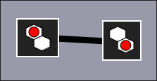
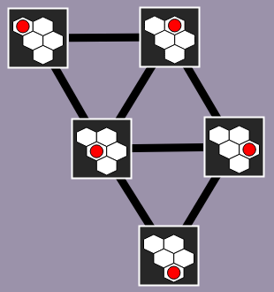
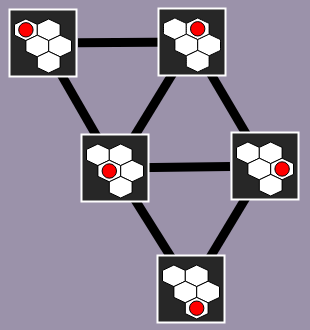

Kuvapeli
Esimerkki
Luo yhteys, jos kuvat eroavat yhden askeleen verran.

Auta majavaa ottamaan kuvat jokaisesta mahdollisesta punaisen pallon sijaintikohdasta.kaikista mahdollisista kahden punaisen pallon sijaintikohdista.
Tee tämä liikuttamalla palloapalloja solusta viereiseen soluun ja klikkaamalla "Ota kuva"-nappia jokaisen erilaisen asetelman kohdalla.
Ottamasi kuvat tulevat näkyviin alla olevan harmaan suorakulmion alueelle. Kun kaikki kuvat on otettu, sinun pitää vielä luoda yhteydet kaikkien sellaisten kuvaparien välille, joissa kuvat eroavat toisistaan vain yhden pallon siirtoaskeleen verran.
Klikkaa kahta kuvaa luodaksesi yhteyden niiden välille.
Kuvat:

Ratkaisu
45 erilaisesta pallon sijaintikohdasta. Voimme sitten vaikkapa asettaa kuvat harmaalla alueella samaan järjestykseen, missä otimme ne (pallo liikkunut aina yhden askeleen). Sitten on helppo yhdistää kuvaparit, joiden välillä pallo on liikkunut yhden askeleen.
Otamme aluksi kuvat kaikista 6 mahdollisesta erilaisesta tavasta asetella 2 palloa soluihin. Sitten voimme asetella kuvat harmaalle alueelle vaikkapa sellaiseen järjestykseen, että aina toinen pallo pysyy samassa paikassa kuin edellisessä kuvassa, ja toinen pallo on liikkunut yhden askeleen. Tämän jälkeen lisäämme yhteydet katsomalla tarkkaan, mitkä kuvaparit eroavat vain yhden pallon yhden askeleen verran toisistaan.
 


Kunkin yksittäisen kuvan osalta on mahdollista varmistaa, ettemme ole unohtaneet lisätä siihen yhtään yhteyttä: lasketaan kuvassa olevien punaisen pallon vieressä olevien valkoisten solujen määräkummankin pallon vieressä olevien valkoisten solujen määrät, kummallekin pallolle erikseen. Tämä määräNäiden määrien summa kertoo, kuinka monta yhteyttä kuvalla tulisi olla, koska jokainen tällainen valkoinen vierussolu vastaa yhtä mahdollista toista kuvaa, joka eroaa vain yhden pallon yhden askeleen verran.
Tämä on tietojenkäsittelyä!
Tehtävä havainnollistaa, kuinka tilanteita (tässä kuvia pallojen asetelmista) sekä niiden välisiä siirtymiä (asetelman muunnos siirtämällä yhtä palloa) voidaan mallintaa graafina (kuvaajana, jossa on viivoilla yhdistettyjä objekteja). Tietojenkäsittelyssä pyritään usein muuntamaan ongelma graafiksi, koska moniin graafimuodossa esitettyihin ongelmiin on olemassa valmiita ja hyvin analysoituja ratkaisualgoritmeja.
Monet ongelmat voidaan luontevasti kuvata graafeilla, kuten reitin etsintä kaupungista toiseen: tällöin graafi koostuu kaupungeista sekä niitä yhdistävistä teistä. Joissain ongelmissa taas yhteys graafiin on vähemmän suora. Tällöin voimme puhua ongelmaa kuvaavasta implisiittisestä graafista.
Ammattitaitoinen ohjelmoija kykenee tunnistamaan, onko ongelma mahdollisesti kuvattavissa graafimuodossa. Tämän onnistuessa ohjelmoija voi usein ratkaista ongelman valmiilla hyvin tunnetuilla graafialgoritmeilla sen sijaan, että yrittäisi keksiä itse uuden mahdollisesti tehottomaksi osoittautuvan ratkaisutavan.
Katso lisää esim. https://fi.wikipedia.org/wiki/Graafi ja https://fi.wikipedia.org/wiki/Verkkoteoria.